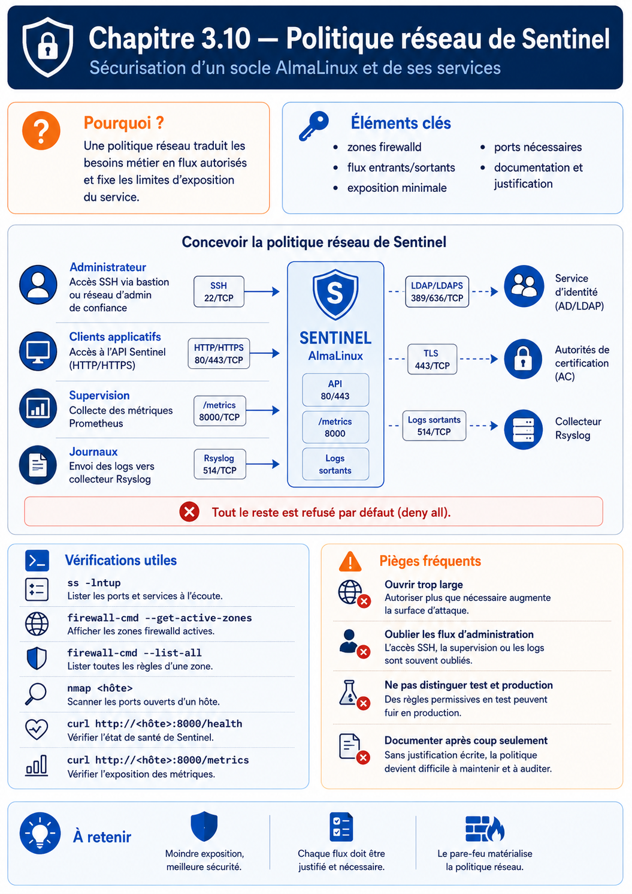

Chapitre 3.10 — Concevoir la politique réseau de Sentinel
Campagne 3 — Réseau et exposition
« Un pare-feu n'est pas une collection de règles. C'est la traduction opérationnelle d'une politique de sécurité. »
Vous êtes ici
Partie I ─ Construire un socle sécurisé
│
├── Campagne 1 ─ Installation
├── Campagne 2 ─ Comptes et privilèges
│
└── Campagne 3 ─ Sécurisation réseau
│
├── 3.1 TCP/IP côté administrateur
├── 3.2 Firewalld
├── 3.3 Les zones
├── 3.4 Les services
├── 3.5 Conntrack
├── 3.6 Les Rich Rules
├── 3.7 Journalisation
├── 3.8 Les IP Sets
├── 3.9 Runtime / Permanent
│
└──► 3.10 Architecture Firewalld
Objectifs pédagogiques
À la fin de ce chapitre, vous serez capable de :
- concevoir une architecture Firewalld adaptée à un environnement professionnel ;
- articuler les zones, les services, les Rich Rules et les IP Sets dans une politique cohérente ;
- intégrer Firewalld avec SELinux, Systemd, FreeIPA, Podman et Sentinel ;
- distinguer une configuration fonctionnelle d'une architecture réellement maintenable ;
- préparer le terrain pour l'industrialisation de la sécurité avec Ansible.
Pourquoi ce chapitre existe
Au fil de cette campagne, nous avons étudié plusieurs mécanismes :
- les zones ;
- les services ;
- Conntrack ;
- les Rich Rules ;
- les IP Sets ;
- la journalisation ;
- la gestion du runtime.
Chaque mécanisme répond à une problématique particulière. Pourtant, un serveur en production ne les utilise jamais isolément. L'ingénieur sécurité ne réfléchit pas :
« Quelle Rich Rule dois-je écrire ? »
Il se demande :
« Quelle politique globale doit protéger cette machine ? »
Autrement dit : Firewalld n'est plus considéré comme un logiciel. Il devient un composant d'une architecture de sécurité.
Théorie détaillée
Une erreur fréquente
Lorsqu'un administrateur reçoit un nouveau serveur, il procède souvent de la manière suivante.
Cette approche fonctionne. Mais elle ne répond à aucune réflexion architecturale. Quelques mois plus tard apparaissent :
- un second réseau ;
- une DMZ ;
- un bastion ;
- des sauvegardes ;
- des conteneurs ;
- des partenaires externes.
La configuration devient progressivement difficile à comprendre. Pourquoi ? Parce que les règles ont été ajoutées au fil des besoins, sans vision d'ensemble.
Une architecture commence par les flux
Avant d'écrire la moindre commande Firewalld, un architecte dessine les communications. Prenons Sentinel.
Aucune règle n'a encore été écrite. Pourtant, une grande partie de la politique est déjà définie.
Construire une matrice de flux
Une méthode très utilisée consiste à construire une matrice. Exemple.
| Source | Destination | Service | Justification |
|---|---|---|---|
| Bastion | AlmaLinux | SSH | Administration |
| Agents Sentinel | Sentinel | TLS | Collecte |
| FreeIPA | Sentinel | LDAP/LDAPS | Authentification |
| Ansible | AlmaLinux | SSH | Déploiement |
| Supervision | Sentinel | HTTPS | Monitoring |
Cette matrice devient le document de référence. Les Rich Rules ne sont qu'une traduction de cette matrice.
Deux niveaux de réflexion
Une politique de sécurité comporte généralement deux niveaux. Premier niveau.
Le réseau.
Questions :
- quels réseaux communiquent ?
- quelles interfaces ?
- quelles zones ?
Second niveau.
Les services.
Questions :
- quel protocole ?
- quel port ?
- quel certificat ?
- quelle authentification ?
Firewalld traite principalement le premier niveau. Les autres composants traiteront progressivement le second.
Le rôle des zones
Les zones expriment le niveau de confiance. Par exemple.
Chaque interface reçoit une zone. L'objectif est que :
Le rôle des services
Les services répondent à une autre question. Quels protocoles sont légitimes ? Par exemple :
SSH
HTTPS
DNS
DHCPv6
Ils constituent une couche d'abstraction. Ils évitent de manipuler directement les ports.
Le rôle des Rich Rules
Les Rich Rules ajoutent les exceptions. Par exemple.
Ou :
Les Rich Rules expriment la politique métier.
Le rôle des IP Sets
Les IP Sets permettent ensuite de définir les populations. Par exemple.
ADMINS
PARTNERS
BACKUPS
OT_AGENTS
Les Rich Rules ne manipulent plus les adresses. Elles manipulent des groupes.
Le rôle de Conntrack
Conntrack répond à une autre problématique.
L'architecte ne crée généralement aucune règle spécifique pour Conntrack. Il conçoit simplement une politique compatible avec un pare-feu stateful.
La journalisation
Dernière couche. Observer. Toutes les règles n'ont pas vocation à produire un journal. Une bonne architecture définit précisément :
- ce qui est enregistré ;
- ce qui est ignoré ;
- ce qui est limité ;
- ce qui est transmis au SIEM.
Le pare-feu devient alors un véritable capteur de sécurité.
Une vision globale
À ce stade, Firewalld peut être représenté de la manière suivante.
Chaque niveau répond à une question différente. Ensemble, ils construisent une politique cohérente.
L'erreur de la "règle miracle"
Certains administrateurs cherchent toujours LA règle qui résoudra tous les problèmes. Cette règle n'existe pas. La sécurité est toujours le résultat de plusieurs décisions complémentaires. Firewalld ne remplace pas :
- TLS ;
- FreeIPA ;
- SELinux ;
- Systemd ;
- les permissions Linux ;
- les audits.
Il prépare simplement le terrain pour que ces mécanismes puissent travailler dans de bonnes conditions.
Intégrer Firewalld dans une architecture de défense en profondeur
L'une des erreurs les plus répandues consiste à considérer Firewalld comme la première et la dernière ligne de défense. En réalité, Firewalld ne constitue qu'une couche. Prenons l'exemple de Sentinel. Un agent souhaite transmettre un rapport. Le chemin parcouru par cette communication est beaucoup plus riche qu'il n'y paraît.
À chaque étape, une nouvelle décision est prise. Si une couche échoue, les suivantes continuent de protéger le système. C'est précisément la définition de la défense en profondeur.
Firewalld et SELinux
Ces deux technologies sont souvent comparées. Pourtant, elles répondent à deux questions totalement différentes. Firewalld demande :
Ce paquet peut-il atteindre ce processus ?
SELinux demande :
Ce processus a-t-il le droit d'effectuer cette action ?
Prenons un exemple. Le port 8443 est autorisé. Le paquet atteint Sentinel. Sentinel tente ensuite :
Lecture
/etc/shadow
Firewalld n'intervient plus. Le réseau est terminé. SELinux prend alors le relais. Il peut parfaitement refuser cette opération. Ainsi, même un attaquant ayant réussi à atteindre l'application ne bénéficie pas automatiquement d'un accès au système. Cette complémentarité est essentielle.
Firewalld et Systemd
Systemd intervient encore à un autre niveau. Imaginons que Sentinel écoute sur : 8443/TCP Firewalld autorise ce port. Pourtant :
systemctl stop sentinel
Le port n'est plus ouvert. Pourquoi ? Parce qu'aucun processus n'écoute. Le pare-feu ne crée jamais un service. Il autorise uniquement le trafic destiné à un service existant. L'architecture complète devient donc :
Firewalld et FreeIPA
FreeIPA ne remplace pas Firewalld. Supposons qu'un utilisateur possède un certificat parfaitement valide. Il tente une connexion depuis une adresse IP totalement inconnue. Si Firewalld refuse le trafic : la connexion TLS n'aura même jamais lieu. Inversement : si Firewalld autorise le trafic, mais que FreeIPA refuse le certificat, l'utilisateur sera également bloqué. Les deux composants réalisent donc des contrôles différents.
Cette succession de filtres réduit considérablement les possibilités d'attaque.
Firewalld et Podman
Notre architecture Sentinel évoluera progressivement vers des conteneurs Podman. Cette évolution soulève une question importante. Qui protège le conteneur ? Plusieurs réponses coexistent. Le trafic peut être filtré :
- avant d'atteindre le réseau Podman ;
- au niveau du réseau des conteneurs ;
- dans le conteneur lui-même.
Une architecture robuste évite de concentrer toute la sécurité à un seul niveau. Le filtrage peut donc être réparti entre :
- Firewalld ;
- les réseaux Podman ;
- l'application ;
- SELinux.
Cette répartition limite fortement les conséquences d'une erreur de configuration isolée.
Firewalld et Ansible
À ce stade de la formation, un constat s'impose. La politique Firewalld devient de plus en plus riche. Elle contient désormais :
- plusieurs zones ;
- plusieurs services ;
- des Rich Rules ;
- des IP Sets ;
- une stratégie de journalisation.
Peut-on raisonnablement maintenir cela manuellement sur cinquante serveurs ? Évidemment non. Une architecture professionnelle suit généralement le schéma suivant.
Le pare-feu devient un élément de l'Infrastructure as Code. Chaque modification :
- est versionnée ;
- relue ;
- testée ;
- déployée automatiquement.
Cette approche réduit énormément les erreurs humaines.
L'architecture Sentinel
Rassemblons maintenant tous les éléments étudiés.
Aucune couche n'est suffisante seule. Ensemble, elles construisent une architecture particulièrement robuste.
Une politique qui résiste au temps
Une bonne politique Firewalld possède plusieurs caractéristiques. Elle est :
- lisible ;
- documentée ;
- industrialisée ;
- reproductible ;
- testable ;
- auditée ;
- automatisée.
Une politique qui dépend uniquement de la mémoire des administrateurs est une politique fragile. À l'inverse, une politique décrite dans :
- des playbooks ;
- une documentation ;
- une matrice de flux ;
- des IP Sets bien nommés ;
peut évoluer sereinement pendant plusieurs années.
Le véritable objectif de Firewalld
Au début de cette campagne, Firewalld pouvait sembler n'être qu'un outil permettant d'ouvrir un port. Nous savons maintenant que son véritable rôle est tout autre. Il permet de transformer une politique de sécurité abstraite en une politique appliquée par le noyau Linux. Cette distinction est essentielle. L'outil importe finalement assez peu. Ce qui compte est la capacité à exprimer correctement la politique. Demain, l'entreprise pourra migrer :
- vers un pare-feu matériel ;
- vers Kubernetes ;
- vers une solution SDN ;
- vers une infrastructure cloud.
Les concepts étudiés dans cette campagne resteront exactement les mêmes. Les commandes changeront. La réflexion architecturale, elle, restera valable.
Concevoir des frontières de confiance
Un architecte commence par les frontières, puis traduit les flux autorisés dans Firewalld.
Chaque frontière implique une question. Que peut traverser cette frontière ? Qui en est responsable ? Comment le vérifier ? Firewalld intervient ensuite pour mettre en œuvre ces décisions.
Les couches doivent rester indépendantes
Une architecture robuste possède une propriété importante. Chaque couche continue de protéger le système même si une autre couche échoue. Imaginons. Firewalld contient une erreur. Une adresse IP non prévue atteint Sentinel. Que se passe-t-il ? TLS intervient. Si TLS échoue également ? FreeIPA intervient. Si un certificat valide est utilisé ? Le contrôle applicatif intervient. Si l'application est compromise ? SELinux limite les conséquences.
Cette indépendance constitue la véritable force d'une architecture de sécurité.
Concevoir pour l'audit
Une architecture doit être compréhensible. Pas uniquement par son auteur. Imaginons qu'un auditeur arrive dans trois ans. Il demande :
Pourquoi cette Rich Rule existe-t-elle ?
Si la seule réponse est :
« Je crois que c'était pour un ancien projet... »
alors la politique est déjà dégradée. Chaque règle importante devrait pouvoir être reliée :
- à un flux ;
- à un besoin métier ;
- à un propriétaire ;
- à une documentation.
Une politique explicable est généralement une politique plus sûre.
En entreprise
Les grandes organisations ne documentent pas leurs pare-feu en listant des règles. Elles documentent :
- les zones ;
- les flux ;
- les responsabilités ;
- les dépendances.
Une revue d'architecture ressemble davantage à ceci.
| Flux | Justification | Responsable | Criticité |
|---|---|---|---|
| Bastion → SSH | Administration | Équipe Système | Élevée |
| Agents → Sentinel | Collecte | Équipe OT | Critique |
| Sentinel → FreeIPA | Authentification | IAM | Critique |
| Supervision → HTTPS | Monitoring | Exploitation | Moyenne |
Les Rich Rules sont ensuite générées à partir de cette réflexion. L'ordre est important. On ne construit jamais une architecture à partir des commandes. On construit les commandes à partir de l'architecture.
Culture technique
Les concepts étudiés dans cette campagne dépassent largement Firewalld. On retrouve exactement les mêmes idées dans :
| Technologie | Équivalent |
|---|---|
| Pare-feux matériels | Address Objects / Policies |
| Cisco ACI | Contracts |
| VMware NSX | Distributed Firewall Policies |
| Kubernetes | Network Policies |
| AWS | Security Groups |
| Azure | Network Security Groups |
| Google Cloud | VPC Firewall Rules |
Les commandes changent. Les principes restent identiques :
- segmentation ;
- moindre privilège ;
- groupes ;
- politiques ;
- observabilité ;
- défense en profondeur.
C'est précisément pour cette raison que ces notions resteront utiles quelle que soit l'évolution future de votre infrastructure.
Piège classique
Penser que Firewalld protège une application
Firewalld ne protège jamais directement une application. Il protège l'accès à cette application. Prenons Sentinel. Firewalld peut empêcher qu'un attaquant atteigne le port 8443. En revanche, si un utilisateur légitime possède déjà un accès valide : Firewalld ne contrôle plus :
- les autorisations métier ;
- les rôles ;
- les commandes exécutées ;
- les données consultées.
Ces responsabilités appartiennent à Sentinel. Cette séparation des responsabilités est fondamentale. Un pare-feu ne remplace jamais une conception applicative sécurisée.
Couvrir les deux sens et les deux familles IP
Une matrice limitée aux connexions entrantes oublie les dépendances de Sentinel : DNS, synchronisation de l'heure, annuaire FreeIPA, dépôt RPM, sauvegarde ou SIEM. Documentez donc les flux entrants, sortants et éventuellement transférés. Les zones décrivent surtout le contexte d'entrée ; les policies Firewalld permettent d'exprimer des relations entre zones, y compris vers la zone symbolique HOST ou ANY selon le besoin.
Chaque flux doit préciser IPv4, IPv6 ou les deux. Une règle IPv4 correcte n'est pas une politique dual-stack. De même, un conteneur Podman peut introduire du forwarding et des zones supplémentaires : vérifiez le trajet réel au lieu de supposer que la zone de l'interface physique suffit.
Le plan de validation doit contenir des tests positifs, des refus, un contrôle local des sockets, la politique Firewalld active, la table de routage et les journaux. Ajoutez un retour arrière et un responsable. Une matrice n'est validée que lorsque ses décisions sont observables des deux côtés du pare-feu.
TP 1 — Construire la matrice de flux
Objectif
Concevoir une architecture Firewalld complète pour une infrastructure Sentinel, sans partir des commandes, mais à partir des flux métier. L'objectif de ce laboratoire est de reproduire la démarche d'un architecte sécurité. Vous ne devez pas vous demander :
« Quelle commande
firewall-cmddois-je exécuter ? »
Vous devez vous demander :
« Quels flux sont réellement nécessaires au fonctionnement de cette infrastructure ? »
Les commandes ne viendront qu'après.
Architecture
Nous reprenons l'infrastructure construite tout au long de cette campagne.
Étape 1 — Identifier les flux
Sans écrire une seule règle Firewalld, réalisez une matrice des communications. Par exemple :
| Source | Destination | Service | Obligatoire ? | Pourquoi ? |
|---|---|---|---|---|
| Bastion | Sentinel | SSH | Oui | Administration |
| Agent | Sentinel | HTTPS/TLS | Oui | Collecte |
| Sentinel | FreeIPA | LDAPS | Oui | Authentification |
| Ansible | Sentinel | SSH | Oui | Déploiement |
| Supervision | Sentinel | HTTPS | Oui | Monitoring |
Ajoutez ensuite tous les flux que vous estimez nécessaires.
Étape 2 — Identifier les flux interdits
Complétez maintenant une seconde matrice.
| Source | Destination | Justification du refus |
|---|---|---|
| Internet | SSH | Administration uniquement via bastion |
| Internet | FreeIPA | Jamais exposé |
| Poste utilisateur | API Sentinel | Non autorisé |
| Agent | SSH | Aucun besoin métier |
Cette seconde matrice est souvent plus importante que la première. Elle matérialise le principe du moindre privilège.
Étape 3 — Construire les zones
Déterminez les zones Firewalld adaptées à votre architecture. Par exemple : public internal trusted ou toute autre organisation répondant à votre contexte. Justifiez chaque choix. Une zone ne doit jamais être créée "par habitude". Elle doit correspondre à un niveau de confiance clairement identifié.
Étape 4 — Définir les IP Sets
Listez les ensembles nécessaires. Par exemple : SENTINEL_AGENTS SENTINEL_ADMINS BACKUP_SERVERS MONITORING ANSIBLE_CONTROLLERS Pour chacun :
- indiquez son propriétaire ;
- sa source de vérité ;
- sa méthode de mise à jour ;
- son cycle de revue.
TP 2 — Traduire et vérifier la politique
À partir des matrices précédentes, rédigez les Rich Rules correspondantes. L'objectif n'est pas d'en produire beaucoup. Au contraire. Cherchez à obtenir :
- peu de règles ;
- très lisibles ;
- fortement réutilisables.
Étape 6 — Définir la stratégie de journalisation
Pour chaque flux : Décidez s'il doit être :
- journalisé ;
- ignoré ;
- limité (
limit) ; - remonté au SIEM.
Justifiez chacune de vos décisions.
Étape 7 — Préparer l'automatisation
Sans écrire encore de playbook Ansible, identifiez :
- les variables ;
- les modèles ;
- les objets réutilisables ;
- les informations qui ne devraient jamais être codées en dur.
Réfléchissez à la manière dont cette politique pourrait être déployée sur :
- 10 serveurs ;
- 100 serveurs ;
- 1 000 serveurs.
L'exercice ne porte plus uniquement sur Firewalld. Il porte sur la capacité à industrialiser une architecture.
Jalon Sentinel — version 0.3.0
Donner une réalité au flux réseau
Jusqu'ici, le port 8443 a surtout servi à raisonner. Sentinel 0.3.0 transforme ce flux en comportement réel en ajoutant un petit serveur HTTP fondé sur la bibliothèque standard Python.
Deux routes sont introduites :
| Route | Fonction | Preuve attendue |
|---|---|---|
GET /health |
prouver que le processus traite une requête | HTTP 200 et version |
GET /api/v1/status |
publier le dernier diagnostic enregistré | document JSON de Sentinel 0.3.0 |
Le nouveau flux est isolé dans src/web.py. Le lanceur sentinel.py reste court, cli.py démarre le serveur et les modules configuration.py, diagnostic.py et state.py conservent leurs responsabilités de la campagne précédente. Cette organisation permet de relire le code réseau sans traverser la gestion des permissions.
La configuration complète devient :
[server]
listen_address = 127.0.0.1
listen_port = 8443
[storage]
state_directory = ../var
Commencez par l'adresse de boucle. Démarrez Sentinel, puis prouvez les deux routes :
./src/sentinel.py --config config/sentinel.conf record
./src/sentinel.py --config config/sentinel.conf serve
curl --fail --silent http://127.0.0.1:8443/health | python3 -m json.tool
curl --fail --silent http://127.0.0.1:8443/api/v1/status | python3 -m json.tool
ss -lntp | grep ':8443'
Une route inconnue comme /admin doit retourner 404. Si aucun état valide n'existe, /api/v1/status doit retourner 503, tandis que /health peut encore répondre : le chapitre 5 distinguera plus finement santé et disponibilité.
Exposer seulement après avoir défini le flux
Pour un test depuis Kali, remplacez l'adresse de boucle par l'adresse de laboratoire de Sentinel. Ne choisissez pas 0.0.0.0 par réflexe : cette valeur écoute sur toutes les interfaces disponibles.
Créez ensuite un service Firewalld explicite :
<?xml version="1.0" encoding="utf-8"?>
<service>
<short>Sentinel laboratory API</short>
<description>Interface HTTP temporaire de Sentinel 0.3.0</description>
<port protocol="tcp" port="8443"/>
</service>
Autorisez uniquement le réseau ou l'adresse prévus par la matrice de flux. Réalisez quatre preuves distinctes :
- requête locale réussie ;
- requête depuis Kali autorisée réussie ;
- requête depuis une source non autorisée refusée ou expirée ;
- aucune modification de
status.jsonpar le client HTTP, car l'API reste en lecture seule.
Capturez aussi ss, les compteurs Firewalld et les journaux de refus. Un curl réussi ne suffit pas à prouver que le filtrage refuse les autres sources.
Le checkpoint complet et ses tests HTTP se trouvent sous sentinel/labs/sentinel-app/checkpoints/0.3.0/.
Mission d'ingénieur
Contexte
Votre entreprise déploie Sentinel dans un groupe industriel international. L'infrastructure cible comprend :
- 12 datacenters ;
- 350 serveurs AlmaLinux ;
- plus de 9 000 agents Sentinel ;
- plusieurs milliers d'utilisateurs FreeIPA ;
- plusieurs centaines de conteneurs Podman ;
- une plateforme Ansible centralisée.
L'audit de sécurité met en évidence plusieurs problèmes.
- Les politiques Firewalld diffèrent selon les sites.
- Certaines Rich Rules n'ont aucune justification documentée.
- Plusieurs IP Sets sont gérés manuellement.
- Les journaux ne suivent aucune convention commune.
- Les modifications d'urgence ne sont pas toujours reportées dans les playbooks Ansible.
La direction vous confie la refonte complète de la politique réseau. Votre objectif n'est pas seulement de sécuriser les serveurs. Vous devez concevoir une architecture capable d'être :
- comprise ;
- auditée ;
- maintenue ;
- automatisée ;
- transmise à de nouvelles équipes.
Votre mission
Vous devez produire un dossier d'architecture contenant au minimum :
- La cartographie des zones de confiance.
- La matrice complète des flux autorisés.
- Les flux explicitement interdits.
- Les IP Sets nécessaires.
- Les conventions de nommage.
- La stratégie de journalisation.
- Les règles de gouvernance.
- Le cycle de validation des changements.
- La stratégie d'automatisation Ansible.
- Les contrôles permettant de vérifier que chaque serveur reste conforme au modèle.
- Le commit Sentinel 0.3.0 et les résultats des tests HTTP.
- Les preuves croisées d'un client autorisé et d'une source refusée.
Votre proposition devra montrer que la sécurité n'est pas une succession de commandes, mais une architecture cohérente.
Impact sur Sentinel
À l'issue de cette campagne, Sentinel repose désormais sur un véritable socle de sécurité.
Cette architecture n'est pas figée. Les campagnes suivantes viendront renforcer chacune de ces couches. Par exemple :
- Campagne 4 : SSH et administration sécurisée.
- Campagne 5 : systemd et durcissement du service.
- Campagne 6 : SELinux.
- Campagne 7 : TLS et certificats.
- Campagne 8 : FreeIPA.
- Campagne 9 : Ansible.
- Campagne 10 : paquet RPM et cycle de vie.
- Campagne 11 : conteneurisation avec Podman.
- Campagne 12 : supervision et audit.
Chaque nouvelle technologie viendra s'appuyer sur les fondations construites dans cette campagne.
Synthèse
- Une politique Firewalld est la traduction technique d'une politique de sécurité.
- Les zones définissent les niveaux de confiance.
- Les services décrivent les protocoles légitimes.
- Les Rich Rules expriment les exceptions métier.
- Les IP Sets séparent les données de la politique.
- Conntrack optimise le traitement des connexions établies.
- La journalisation transforme le pare-feu en capteur de sécurité.
- La distinction runtime/permanent permet de tester sans compromettre la reproductibilité.
- Firewalld n'est efficace que lorsqu'il est intégré à une stratégie de défense en profondeur avec SELinux, Systemd, FreeIPA, TLS, Podman et Ansible.
- Une architecture homogène, documentée et automatisée est plus sûre qu'une accumulation de règles.
Pour aller plus loin
Conservez la matrice de flux et les preuves comme baseline. Les campagnes suivantes ajouteront SSH, systemd, SELinux, TLS, FreeIPA, Ansible et Podman ; chacune devra préciser quels flux elle ajoute, retire ou rend plus exigeants sans contourner cette source de vérité.
À l'issue de cette campagne, vous savez raisonner en flux métier, segmenter un réseau et combiner zones, services, Rich Rules, IP Sets, Conntrack, journalisation et cycle runtime/permanent. Ce socle permettra aux campagnes suivantes d'ajouter SELinux, systemd, FreeIPA, TLS, Podman et Ansible sans perdre la maîtrise de l'exposition réseau.
Schéma récapitulatif
